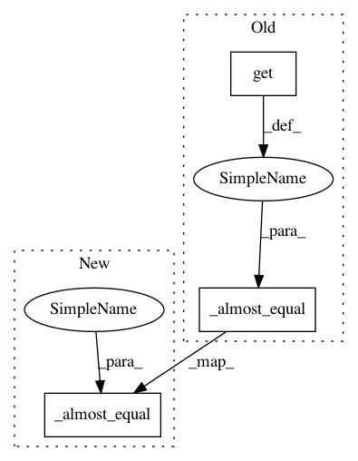

cdd9e21ff93f1e0fbb3018ea9edcaefe0f38620d,tests/syft/lib/tenseal/tenseal_ckkstensor_test.py,,test_tenseal_ckkstensor_isub,#,172
Before Change
// isub
result_enc_ptr = enc_v1_ptr - v2
result = result_enc_ptr.decrypt().get()
_almost_equal(result, expected)
// rsub
result_enc_ptr = v2 - enc_v1_ptr
After Change
// isub
result_enc_ptr = enc_v1_ptr - v2_ptr
result = decrypt(context, result_enc_ptr)
_almost_equal(result, expected)
@pytest.mark.vendor(lib="tenseal")
def test_tenseal_ckkstensor_imul(context: Any, duet: sy.VirtualMachine) -> None:
In pattern: SUPERPATTERN
Frequency: 3
Non-data size: 3
Instances
Project Name: OpenMined/PySyft
Commit Name: cdd9e21ff93f1e0fbb3018ea9edcaefe0f38620d
Time: 2021-02-02
Author: bogdan.cebere@gmail.com
File Name: tests/syft/lib/tenseal/tenseal_ckkstensor_test.py
Class Name:
Method Name: test_tenseal_ckkstensor_isub
Project Name: OpenMined/PySyft
Commit Name: cdd9e21ff93f1e0fbb3018ea9edcaefe0f38620d
Time: 2021-02-02
Author: bogdan.cebere@gmail.com
File Name: tests/syft/lib/tenseal/tenseal_ckkstensor_test.py
Class Name:
Method Name: test_tenseal_ckkstensor_dot